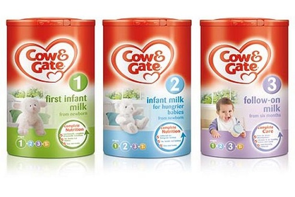
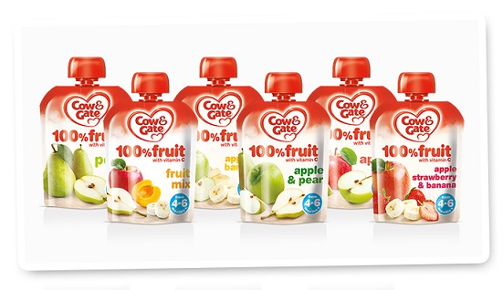

 牛栏(Cow & Gate)，源自英国的本土奶制品品牌，在英国有近300多年的历史，是全球历史最悠久的乳业公司，堪称奶粉行业鼻祖，至今未曾出现过任何质量问题，被誉为全球最安全的奶粉品牌。 奶源来自天然纯净的爱尔兰牧场，而且仅限爱尔兰和英国出售，香港牛栏大多数来自东南亚的奶源。
百年历史的牛栏品牌起源于英国，英国牛栏即Cow&gate，始于1711年，专业从事乳业至今已有300年历史，是全球历史最悠久的乳业公司，300年以来从未有过安全问题，被公认为是食品安全的唯一楷模。 从一开始的小杂货店发展到现在的英国领先的婴幼儿食品专家，牛栏有着辉煌的历史，延续至今，已获得八大奖项。 Mother&Baby Award 2012：纯水果食品获得最佳婴儿食品银奖，Tesco Mum’Choice Award 2012：牛栏三段牛奶获得最佳成长牛奶， Tommy’s Let Get Friendly Award 2012：牛栏获得最佳婴幼儿食品品牌奖，Tommy’s Let Get Friendly Award 2011：牛栏获得最佳婴幼儿食品品牌奖 Prima Baby Reader Award 2010：牛栏食品获得非有机食品类的最佳婴儿食品金奖和最值得购买的婴儿食品金奖， Prima Baby Reader Pregnency Award 2010:牛栏的2段奶粉获得最有价值的二段奶粉奖项， Tesco Mum’Choice Award 2010：牛栏的婴幼儿甜品获得最佳断奶食品奖， Tesco Mum’Choice Silver Standard Award 2010:牛栏食品获得最佳食品奖，这些闪闪地荣誉赖于牛栏三百多年的坚持不懈。 
普通配方奶粉分为：Cow & Gate First Infant Milk（牛栏1段）、Cow & Gate Hungrier Milk （牛栏饥饿型奶粉）、Cow & Gate Follow-on Milk （牛栏2段）、Cow & Gate Growing Up Milk （牛栏3段）、 Cow & Gate Growing Up Milk （牛栏4段）；特殊配方奶粉即医用配方奶粉分为：Cow&Gate Anti-Reflux Milk （牛栏防吐配方奶粉）、Cow&Gate Comfort Milk （牛栏肠胃舒适配方奶粉）、 Cow＆Gate Infasoy （牛栏抗过敏型豆奶粉）、Cow＆Gate Nutriprem2 （牛栏早产及低体重儿奶粉）、Cow＆Gate Pepti-Junior （牛栏深度水解特殊配方奶粉）。